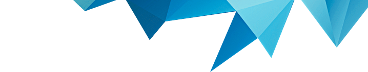
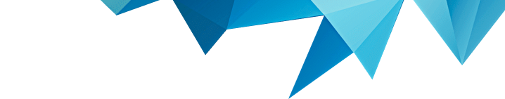

Антикоррупционная политика
Антикоррупционная политика является основополагающим документом ООО «Сейсмопоиск» в области противодействия коррупции и содержит: комплекс взаимосвязанных принципов и процедур, мероприятий, предусмотренных актом официального толкования – Методическими рекомендациями по разработке и принятию организациями мер по предупреждению и противодействию коррупции, разработанными Министерством труда и социальной защиты Российской Федерации и утвержденными 8 ноября 2013 года.
Обучение работников
В Компании осуществляется реализация разносторонних и последовательных мер по предупреждению, устранению (минимизации) причин и условий, порождающих коррупцию, формированию антикоррупционного сознания работников, характеризующегося нетерпимостью к любым формам коррупционных проявлений.
Для достижения этой цели нами внедрена система вводного и периодического обучения сотрудников. Она основана на лучших мировых практиках в сфере построения системы противодействия коррупции,.